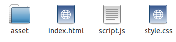

p5.js (p5js.org) est une bibliothèque JavaScript qui reprend les concepts de l'excellentissime Processing (processing.org). p5.js va donc nous permettre de dessiner, de travailler sur des images, de travailler avec du texte, de faire des animations, de travailler sur des données...tout cela dans un navigateur web.
Avant d'entrer dans le vif du sujet, mettons en place notre environnement de travail :
Placez-vous dans votre dossier personnel et créez un nouveau dossier que vous nommerez "p5". Dans ce dossier "p5", créez un autre dossier nommé "ex0".
Placez-vous dans le dossier "ex0" et créez 3 fichiers :
Toujours dans le dossier "ex0", créez un dossier "asset"
Vous devriez donc avoir ceci dans votre dossier "ex0" :
À l'aide d'un éditeur de texte (scite par exemple), ouvrez le fichier "index.html" et saisissez le code suivant :
index.html
<!DOCTYPE html>
<html lang="fr">
<head>
<meta charset="utf-8">
<title>p5.js</title>
<link rel="stylesheet" href="style.css">
<script src="https://cdnjs.cloudflare.com/ajax/libs/p5.js/0.4.23/p5.min.js"></script>
<script src="script.js"></script>
</head>
<body>
</body>
</html>
De temps en temps, consulter ce site pour vérifier que vous utilisez bien la dernière version de p5js. Dans le code ci-dessus, nous utilisons la version "0.4.23". Si une nouvelle version est disponible, n'hésitez pas à modifier l'url (https://cdnjs.cloudflare.com/ajax/libs/p5.js/0.4.23/p5.min.js) dans le fichier html ci-dessus.
La structure de base qui vous permettra d'utiliser p5.js est en place, par la suite, il suffira de "copier-coller" le dossier "ex0" et de le renommer à chaque fois que vous aurez besoin de créer un nouvel exemple.
ATTENTION : si l'ordinateur que vous utilisez n'est pas connecté à internet, la méthode décrite ci-dessus ne fonctionnera pas. Veuillez alors suivre les instructions données ici.